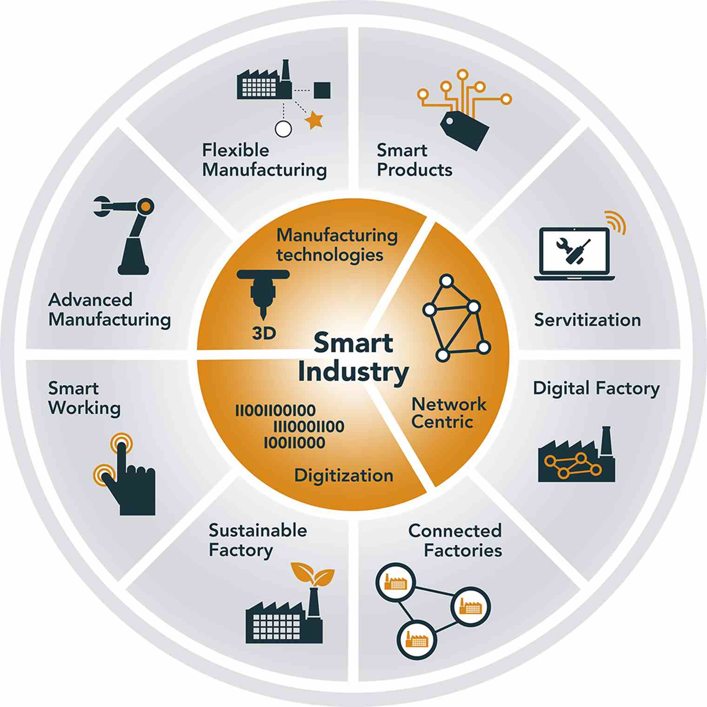
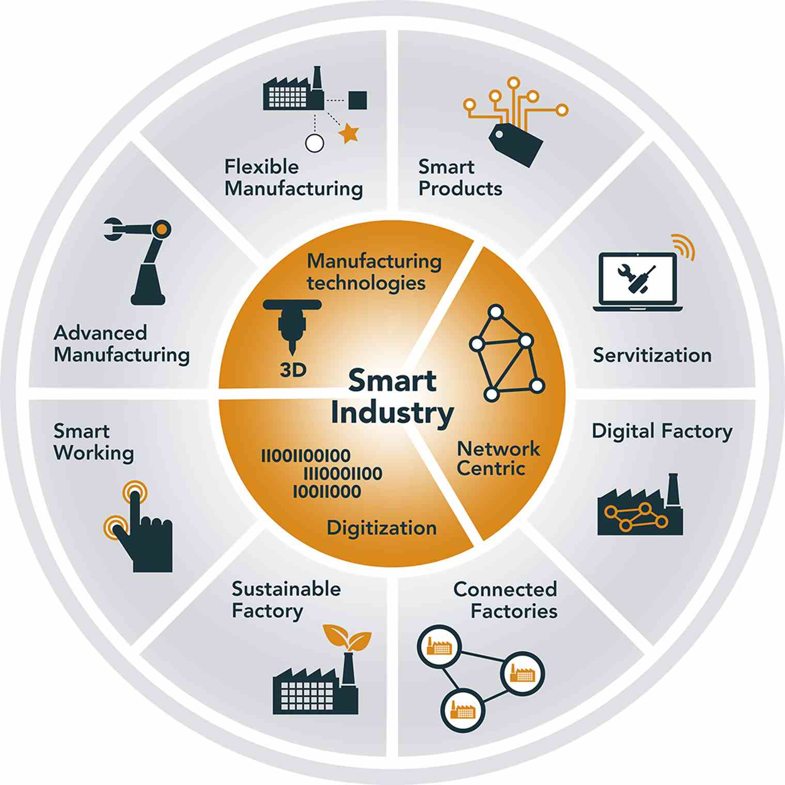

Minor Smart Industry
Dit is het portfolio voor de minor Smart Industry van Coen Goossens, student Technische Bedrijfskunde aan de Hogeschool Saxion in Enschede. In dit portfolio is de bewijslast verzameld om aan te kunnen tonen dat er aan alle competententies is voldaan, die vanuit de minor worden gesteld. Per thema van de minor zal toegelicht worden op welke wijze aan de betreffende competententies is gewerkt. In het kader van Smart Industry is er tevens een project uitgevoerd naar 3D-printen van serviceonderdelen bij het bedrijf ATAG Benelux. Alle informatie omtrent dit project is te vinden onder het tabblad Project.
Mocht u naar aanleiding van dit portfolio opmerkingen óf eventuele verbeteringen kunnen aandragen, dan hoor ik dit graag. Ik sta ten alle tijde open voor feedback en ik geloof dat dit de kwaliteit van mijn portfolio ten goede komt. Uw feedback op basis van dit portfolio wordt dan ook zeer gewaardeerd.
Ik wil u alvast hartelijk danken voor het lezen van mijn portfolio.
Coen Goossens, 16 januari 2020